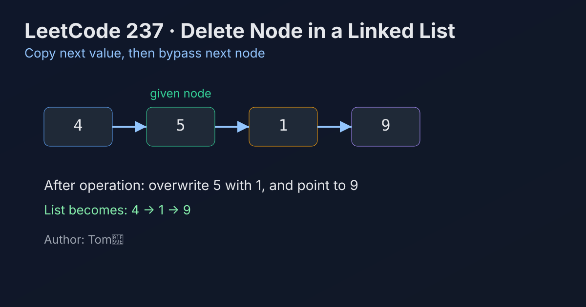

LeetCode 237: Delete Node in a Linked List (Value Copy + Next Bypass)
LeetCode 237Linked ListPointer RewriteToday we solve LeetCode 237 - Delete Node in a Linked List.
Source: https://leetcode.com/problems/delete-node-in-a-linked-list/

English
Problem Summary
You are given direct access to a non-tail node in a singly linked list. Delete this node without access to the head pointer.
Key Insight
Since we cannot access the previous node, we cannot unlink the current node directly. Instead, we overwrite current node's value with node.next.val, then skip node.next by rewriting node.next = node.next.next.
Algorithm (Step-by-Step)
1) Let nextNode = node.next.
2) Copy value: node.val = nextNode.val.
3) Bypass next node: node.next = nextNode.next.
4) Done. The original next node is now detached.
Complexity Analysis
Time: O(1).
Space: O(1).
Common Pitfalls
- Trying to free/delete the given node itself in a language where references are managed.
- Forgetting the constraint that the given node is guaranteed not to be the tail.
- Copying only value but not rewiring next pointer.
- Misunderstanding that list values, not node identities, are checked in this problem.
Reference Implementations (Java / Go / C++ / Python / JavaScript)
/**
* Definition for singly-linked list.
* public class ListNode {
* int val;
* ListNode next;
* ListNode(int x) { val = x; }
* }
*/
class Solution {
public void deleteNode(ListNode node) {
node.val = node.next.val;
node.next = node.next.next;
}
}func deleteNode(node *ListNode) {
node.Val = node.Next.Val
node.Next = node.Next.Next
}/**
* Definition for singly-linked list.
* struct ListNode {
* int val;
* ListNode *next;
* ListNode(int x) : val(x), next(NULL) {}
* };
*/
class Solution {
public:
void deleteNode(ListNode* node) {
node->val = node->next->val;
node->next = node->next->next;
}
};# class ListNode:
# def __init__(self, x):
# self.val = x
# self.next = None
class Solution:
def deleteNode(self, node):
node.val = node.next.val
node.next = node.next.next/**
* @param {ListNode} node
* @return {void}
*/
var deleteNode = function(node) {
node.val = node.next.val;
node.next = node.next.next;
};中文
题目概述
给你单链表中的一个非尾节点（不是头指针），要求你把这个节点“删除”。
核心思路
拿不到前驱节点，就无法常规地把当前节点摘掉。做法是把后继节点的值拷贝到当前节点，再把当前节点的 next 指向后继的 next，相当于“覆盖并跳过后继”。
算法步骤
1）保存后继节点 nextNode = node.next。
2）执行值覆盖：node.val = nextNode.val。
3）执行跳过：node.next = nextNode.next。
4）完成删除语义。
复杂度分析
时间复杂度：O(1)。
空间复杂度：O(1)。
常见陷阱
- 误以为要“真正删除当前节点对象”。本题只要求链表结果正确。
- 忘记题目保证给定节点不是尾节点。
- 只复制值却没有修改 next 指针。
- 将节点身份和节点值混淆，导致理解偏差。
多语言参考实现（Java / Go / C++ / Python / JavaScript）
class Solution {
public void deleteNode(ListNode node) {
node.val = node.next.val;
node.next = node.next.next;
}
}func deleteNode(node *ListNode) {
node.Val = node.Next.Val
node.Next = node.Next.Next
}class Solution {
public:
void deleteNode(ListNode* node) {
node->val = node->next->val;
node->next = node->next->next;
}
};class Solution:
def deleteNode(self, node):
node.val = node.next.val
node.next = node.next.nextvar deleteNode = function(node) {
node.val = node.next.val;
node.next = node.next.next;
};
Comments